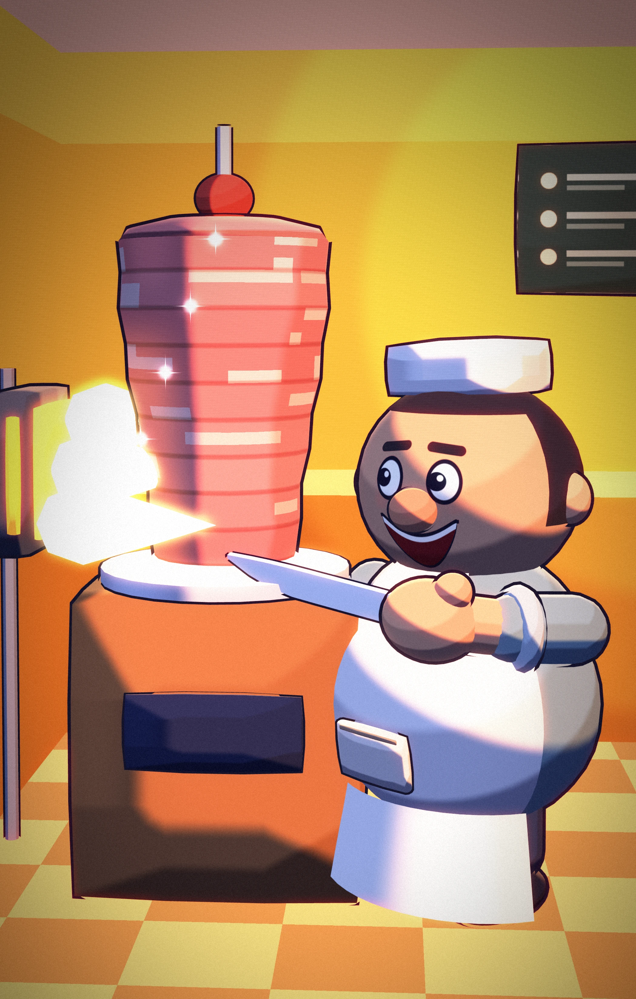
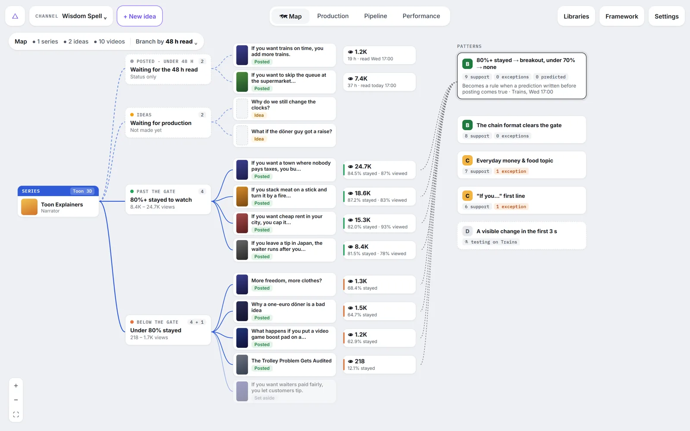
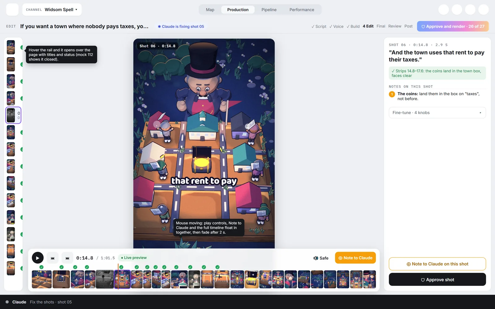

From idea to finished Short, one map.
Plan ideas against your real channel stats, record your voice, and let Claude build every scene in code. Review it shot by shot, render, post, and see what worked.

Three screens do the work.

1. Map
Every idea and posted Short on one map, grouped by how it really performed after 48 hours.

2. Build & Edit
Claude turns your script and voice into toon 3D scenes in code. Watch the film, leave a note on any shot, and Claude fixes it.
3. Analyze
The Performance page reads your real YouTube stats and shows which Shorts cleared the gate, so the next idea starts from data.
Three things, set up once.
A Windows PC
Windows 10 or 11, 64-bit, with room on a drive for your projects and renders.
Your own Claude plan
Claude Pro or Max. You install Claude Code and sign in yourself. Shorts Studio never sees your login.
Five minutes
The install guide walks you through it, including the one Windows warning you'll see.
Ready to make your first Short?
Download, install, and open the app from here any time.